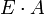
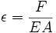
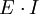
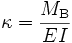
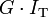
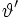
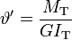

Steifigkeit
Die Steifigkeit ist eine Größe in der Technischen Mechanik. Sie beschreibt den Widerstand eines Körpers gegen Verformung durch eine Kraft oder ein Drehmoment. Die Steifigkeit eines Körpers ist von dessen Werkstoff sowie der Geometrie abhängig. Je nach Belastungsart unterscheidet man unterschiedliche Steifigkeiten, z. B. Biege-, Dehn- oder Torsionssteifigkeit. Der Kehrwert der Steifigkeit wird Nachgiebigkeit genannt.
Inhaltsverzeichnis[Verbergen] |
Steifigkeiten [Bearbeiten]
Steifigkeiten bestehen immer aus einem Werkstoff- und einem Geometrieterm. Welche Werkstoffgröße eingesetzt wird – also Schub- oder Elastizitätsmodul – hängt von der Beanspruchung ab, die durch eine äußere Belastung hervorgerufen wird. Steifigkeiten werden so notiert, dass sich bezogene Verformungsgrößen ergeben, also z. B. Dehnungen statt Längenänderungen. Dies ist darin begründet, dass die Steifigkeit eine Eigenschaft des Querschnitts ist. Die Querschnittgeometrie kann sich jedoch über die Länge eines Bauteils ändern, so dass die Multiplikation mit der Länge nicht immer korrekt ist. Die Federkonstante ist ein Sonderfall.
Dehnsteifigkeit [Bearbeiten]
Die Dehnsteifigkeit ist das Produkt des Elastizitätsmoduls des Werkstoffs in Belastungsrichtung, multipliziert mit der Querschnittsfläche senkrecht zur Belastungsrichtung. Sie ist unabhängig von der Form des Querschnitts.
-  zum Beispiel in N
Diese Formulierung gilt für freie Querkontraktion des Querschnitts. Bei behinderter Querkontration wird für den Elastizitätsmodul der querkontraktionsbehinderte Modul eingesetzt. Die Längsdehnung ε des Körpers ist zu der angreifenden Normalkraft F proportional, sowie zu der Dehnsteifigkeit umgekehrt proportional.
- 
Biegesteifigkeit [Bearbeiten]
Die Biegesteifigkeit ist das Produkt aus Elastizitätsmodul und Flächenträgheitsmoment I des Querschnitts. Das Flächenträgheitsmoment hängt wesentlich von der Form des Querschnitts ab.
-  zum Beispiel in Nmm2
Wie stark die Durchbiegung bzw. Absenkung eines biegebeanspruchten Bauteils bei gegebener Last ist, hängt neben der Biegesteifigkeit auch von dessen Länge und den Lagerungsbedingungen ab. Die Krümmung κ des Körpers ist zu dem angreifenden Biegemoment MB proportional, sowie zu der Biegesteifigkeit EI umgekehrt proportional.
- 
Torsionssteifigkeit [Bearbeiten]
Die Torsionssteifigkeit (auch mit Verwindungssteifigkeit bezeichnet) ist das Produkt aus dem Torsionsträgheitsmoment IT und dem Schubmodul G des Werkstoffs. Das Torsionsträgheitsmoment ist bezogen auf die Achse, um die der Körper tordiert wird.
-  zum Beispiel in Nmm2
Oft wird irrtümlicherweise behauptet, das Torsionsträgheitsmoment entspräche dem polaren Flächenträgheitsmoment Ip eines Querschnitts. Das gilt aber in Wirklichkeit ausschließlich für Kreisquerschnitte und geschlossene Kreisringquerschnitte. Ansonsten läßt sich für das Torsionsträgheitsmoment nur in besonderen Fällen eine geschlossene Formel angeben.
Wie stark ein Körper unter einer bestimmten Last verdreht wird, hängt neben dem Torsionsträgheitsmoment auch von dessen Länge und den Lagerungsbedingungen ab. Die Drillung  des Körpers ist zu dem angreifenden Torsionsmoment MT proportional, sowie zu der Torsionssteifigkeit umgekehrt proportional.
- 
Federkonstante [Bearbeiten]
In der Praxis ist oft nicht die Dehnung ε, sondern die absolute Längenänderung ΔL von Interesse. Daher wird bei Federn die Federkonstante durch das Verhältnis der notwendigen Kraft F für eine bestimmte Auslenkung ΔL beschrieben. Die Federkonstante besteht aus der Steifigkeit der Feder, dividiert durch ihre Länge. Während die Dehnsteifigkeit unabhängig von der Länge der Feder ist, halbiert sich die Federkonstante, wenn die Länge der Feder verdoppelt wird.
Beispiel: Ein Zugstab mit dem Querschnitt A = 100 mm2 und einem Elastizitätsmodul von 210.000 N/mm2 hat eine Steifigkeit von E·A = 2,1·107 N. Ist der Stab L = 100 mm lang so beträgt seine Federkonstante E·A / L = 210.000 N/mm. Die Berechnung gilt nur dann, wenn der Querschnitt des Stabs konstant ist.
Steifigkeit und Festigkeit [Bearbeiten]
Steifigkeit ist nicht mit Festigkeit zu verwechseln.
- Die Festigkeit ist ein Maß für die ertragbaren Belastungen eines Werkstoffs. Dieser Grenzwert (z. B. die Zugfestigkeit Rm) kann in Material-Datenblättern nachgeschlagen werden.
- Die Steifigkeit eines Bauteils hängt von der Steifigkeit des Materials (E- oder G-Modul), aber auch von der Größe und Form der Querschnittsfläche ab.
Wie steif ein Bauteil ist, hat nichts mit dessen Festigkeit zu tun!
Siehe auch [Bearbeiten]
- Spezifische Steifigkeit, Konsistenz (Beton)
- Biegemoment, Torsionsmoment, Biegefestigkeit, Balkentheorie
- Normalkraft, Druck-, Zugfestigkeit
- Elastizitätsmodul, Flächenträgheitsmoment, Schubmodul
Quellen [Bearbeiten]
Google Books Kunststoffpraxis: Konstruktion, Band 1/Teil 5 /Kap. 8.2: Beanspruchungsgerechtes Konstruieren, Steifigkeit, von Norbert Herrlich, WEKA Media, ISBN 3-8111-5935-6